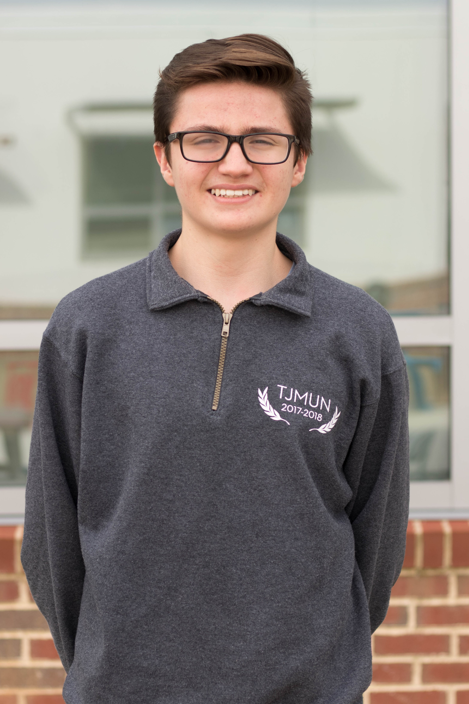
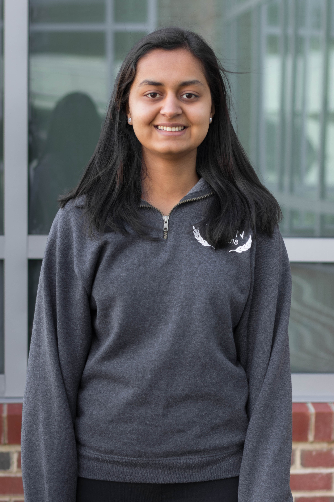
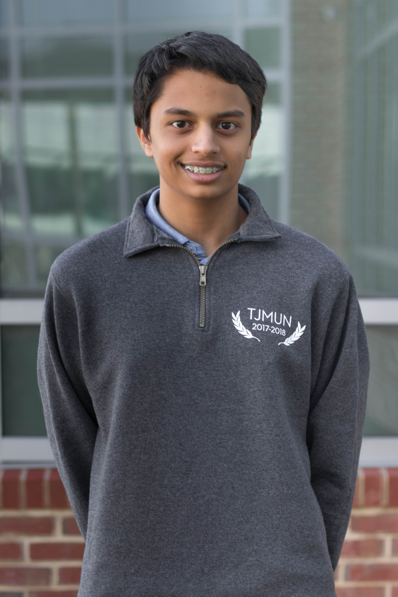

Hi delegates! My name is Sebastian Ibarraran, and I will be chairing the UNSC: First Contact at TechMUN 2018. I’m a junior at TJ, which obviously narrows down my free time quite a bit, and I started doing MUN last year. Aside from TJMUN, some of the other ways I use my time are running for the track and cross country team, being the secretary of Future Business Leaders of America, and listening to Kanye West music from the mid-2000s (I highly recommend this over hearing the words “Gucci Gang” repeated constantly).
Given that this committee takes place in the future, creativity is going to be crucial for your own success and the progression of committee. Vishnu and I will be looking for compelling and innovative ideas in your directives both publicly and privately, so be sure to put a lot of thought into anything you produce during committee. If you have any questions, feel free to email us at unsctechmun2018@gmail.com. I can’t wait to work with you all in April!

Hello Delegates! My name is Shreya Wadehra, and I’m a senior at TJ. I’m originally from Florida, moved to Virginia my freshman year of high school, and have been participating in Model UN ever since. Without a doubt, TJMUN has been one of the best experiences I’ve had and has kindled my interest in politics and foreign affairs. Outside of Model UN, I love to speedsolve the Rubik’s cube, play piano, perform magic, and play basketball.
From a committee standpoint, I will be looking for delegates who are creative leaders with unique solutions. As a futuristic committee, we encourage delegates to try new things in their public and private directives. The more creative you get the more fun the committee will be! Feel free to contact me, Vishnu, or Sebastian at unsctechmun2018@gmail.com. Good luck and see you in April!

Hey delegates! My name is Vishnu Murthy and I’ll be chairing the UNSC: First Contact Committee at TechMUN 2018. A bit about me - I’m a junior at TJ, and this is my 3rd year in TJMUN. In my limited free time, I love to listen to rap (both old school and modern), watch YouTube, and sleep.
Sebastian and I want this experience to be constructive, creative, and fun. We are looking for compelling public and private directives, as well as solid speeches. This committee is pretty unusual, so be on the lookout for unique crisis updates. If you have any questions, feel free to email us at unsctechmun2018@gmail.com. See you in April!